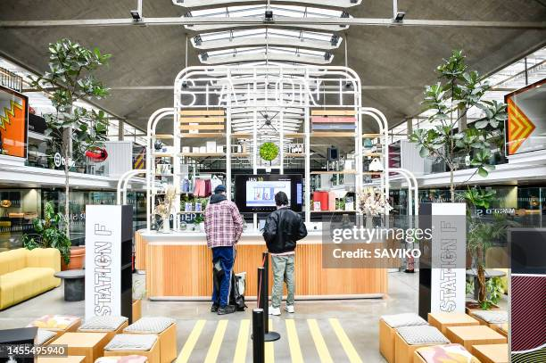

Startups in France
France has rapidly become a European startup hotspot, driven by a mix of bold entrepreneurs, government funding, and global partnerships. With initiatives like La French Tech, Paris and other major cities have nurtured a dynamic environment where ideas transform into global businesses. The ecosystem thrives on collaboration, innovation, and an emphasis on solving real-world problems, from sustainability to digital finance.
Station F: The World's Largest Startup Campus
Located in the heart of Paris, Station F is more than just an office space; it's a complete ecosystem designed for growth. With over 3,000 desks, dozens of accelerators, venture capital offices, and direct connections to industry leaders like Facebook and Microsoft, Station F empowers entrepreneurs at every stage. Its flexible programs make it a magnet for both local talent and international founders seeking mentorship, networking, and investment opportunities.
French Tech: Driving Innovation and Global Expansion

La French Tech is France’s flagship startup label and community. Through government support and private collaboration, this initiative accelerates the global reach of French startups. French Tech Visa also makes it easier for foreign entrepreneurs and investors to relocate to France and be part of its growing tech landscape. The brand symbolizes France’s confidence in its entrepreneurs to compete at the global stage.
Government Support for Startups
The French government actively supports startups through a combination of tax breaks, loans, subsidies, and research grants. Organizations like Bpifrance provide not just financial assistance but also strategic advice and international market access. Programs such as the Research Tax Credit (CIR) encourage startups to invest in R&D, while regional startup hubs ensure tech innovation extends beyond Paris.
Future of Startups in France

As technology evolves, French startups are expanding into areas like artificial intelligence, biotechnology, climate tech, and space exploration. Initiatives like GreenTech Innovation and French Space Startups are making sustainability and space technology national priorities. The future of France’s startup scene is also powered by collaboration with European Union regulations and global ethical tech standards, ensuring that innovation is responsible and inclusive.
Success Stories: French Startups on the Global Stage

French startups like BlaBlaCar, Deezer, Doctolib, and Back Market have proven that local innovation can solve global problems. BlaBlaCar revolutionized carpooling across Europe, Deezer became an early music streaming giant, while Doctolib reshaped telemedicine. These success stories inspire young entrepreneurs to think big and embrace global markets from day one.